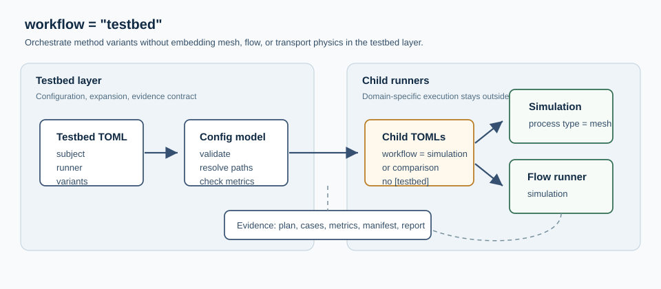
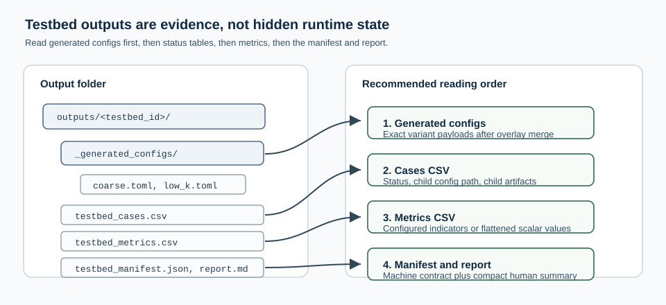

Testbed Workflow#
Use this workflow when the goal is not to run one model, but to organize a controlled method testbed.
A testbed expands cases, delegates each case to a child runner, then collects evidence artifacts such as generated configs, metrics, manifests, and reports.

Fig. 8 testbed owns the case matrix and evidence contract. Mesh, flow, and
future transport runners keep ownership of their own domain execution.#
The first supported subjects are:
meshthrough thesimulationrunner with atype = "mesh"process;flowthrough either thesimulationrunner or thecomparisonrunner.transportthrough the same child-runner contract as flow.
This keeps the testbed detached from simulation internals. A mesh testbed can
evaluate discretization choices without running a flow solver. A flow testbed
delegates to ordinary generated [workflow].mode = "simulation" children,
but the testbed itself only expands cases and gathers evidence. A flow
testbed can also delegate to ordinary generated
[workflow].mode = "comparison" children when a regional or method campaign
contains several pairwise comparison configs.
The implementation lives near the analysis workflows in
hydromodpy/analysis/testbed/. The package README documents the internal
contract for maintainers; this page documents the user-facing behavior.
Profiles#
[testbed].profile selects a specialization of the testbed campaign model.
When omitted, the profile is "generic" and the file is parsed as the
case matrix documented on this page.
[workflow]
mode = "testbed"
[testbed]
profile = "generic"
profile = "regional_lab" delegates to the regional catalog profile. That
profile exposes the [regional_lab] section for regional concepts such as
site catalogs, cluster rules, status/maturity fields, coverage gaps, and
recipes. See Regional Lab Profile for the full reference.
[workflow]
mode = "testbed"
[testbed]
profile = "regional_lab"
[regional_lab]
lab_id = "headwater_campaign"
What This Workflow Is#
Declare a testbed with:
[workflow]
mode = "testbed"
[testbed]
id = "mesh_resolution_testbed"
subject = "mesh"
purpose = "robustness"
base_config = "mesh_base.toml"
output_root = "outputs/mesh_resolution_testbed"
[testbed.runner]
type = "simulation"
[[testbed.case]]
id = "coarse"
axis = "resolution"
[testbed.case.overlay.mesh_catchment.zone_meshing]
global_size = 400.0
[[testbed.case]]
id = "fine"
axis = "resolution"
[testbed.case.overlay.mesh_catchment.zone_meshing]
global_size = 100.0
[[testbed.metric]]
name = "n_cells"
The launcher writes one child TOML per case under:
<output_root>/_generated_configs/
For mesh subjects, each generated child is a normal
[workflow].mode = "simulation" TOML. If the base config does not already
declare processes, the testbed materializer injects:
[[simulation.process]]
id = "mesh_main"
type = "mesh"
backend = "catchment"
runner.type = "mesh_catchment" is no longer part of the testbed contract.
Use runner.type = "simulation" and keep mesh settings in the
[mesh_catchment] section consumed by the mesh process.
Compatibility Note#
case is the canonical testbed vocabulary. The historical TOML spellings
[[testbed.variant]] and [[testbed.variant_from_catalog]] are no longer
accepted. Use [[testbed.case]] and [[testbed.case_from_catalog]].
Catalog-Backed Cases#
Cases can also be generated from a CSV or JSONL catalog. This is the common
campaign model that the regional_lab profile specializes for regional site
inventories.
[testbed.catalog]
path = "case_catalog.jsonl"
format = "jsonl"
id_field = "case_id"
label_field = "title"
axis_field = "scale"
tags_field = "tags"
path_fields = ["workspace_root"]
field_equals = { tier = "smoke" }
tags = ["mesh_ready"]
[[testbed.case_from_catalog]]
required_fields = ["workspace_root", "global_size"]
[testbed.case_from_catalog.overlay.workspace]
project_root = "{workspace_root}"
[testbed.case_from_catalog.overlay.mesh_catchment.zone_meshing]
global_size = "{global_size}"
The catalog loader supports CSV and JSONL, optional suffix inference with
format = "auto", required fields, path fields resolved relative to the
catalog file, tag filtering, equality filters, and enabled rows. The
case_from_catalog block is an overlay template: placeholders such as
{workspace_root} and {global_size} are taken from the selected row.
Explicit [[testbed.case]] blocks and catalog-generated cases can be
combined as long as case identifiers remain unique.
Catalog-Backed Comparisons#
The same mechanism can generate one comparison per site. In that case the
testbed child is a normal [workflow].mode = "comparison" TOML, not a special
script:
[testbed]
subject = "flow"
base_config = "compare_natural_10km2_mf6_bouss_base.toml"
[testbed.runner]
type = "comparison"
[testbed.catalog]
path = "natural_10km2_sites.csv"
id_field = "site_id"
label_field = "site_label"
tags_field = "tags"
tags = ["natural_10km2", "comparison"]
[[testbed.case_from_catalog]]
id_template = "{site_id}"
[testbed.case_from_catalog.overlay.comparison]
comparison_id = "{site_id}_natural_10km2_mf6_bouss"
output_root = "outputs/comparisons/{site_id}_natural_10km2_mf6_bouss"
[testbed.case_from_catalog.overlay.comparison.base_simulation_overlay.geographic.catchment]
x_outlet = "{x_outlet}"
y_outlet = "{y_outlet}"
The generated comparison config still delegates to the existing comparison
launcher. comparison.base_simulation_overlay carries the site-wide physical
case shared by all methods in that comparison, while each
comparison.simulation.overlay keeps method-specific settings such as MF6 IMS
parameters or the Boussinesq PETSc TS/SNESVI backend.
For comparison testbeds, [[testbed.metric]] is optional. If no metric block
is declared, the runner reports the default comparison summary: comparison id,
audit status, row counts, and numerical-closure diagnostics when available.
Declare explicit metric blocks only when the campaign needs a custom summary.
The HTML synthesis generated by
examples/projects/10_testbed_workflow/reporting/generate_testbed_web_report.py
detects this catalog contract from the testbed manifest and adds a
Mode catalogue pas a pas section with links to the catalog, generated
configs, and comparison pages.
Flow Example#
A flow testbed uses the same orchestration contract, but delegates each child case to the simulation workflow:
[workflow]
mode = "testbed"
[testbed]
id = "flow_k_sensitivity"
subject = "flow"
purpose = "robustness"
base_config = "flow_base.toml"
output_root = "outputs/flow_k_sensitivity"
[testbed.runner]
type = "simulation"
[[testbed.case]]
id = "low_k"
axis = "hydraulic_conductivity"
[testbed.case.overlay.simulation]
name = "flow_low_k"
[testbed.case.overlay.flow.param.K.field]
value = "5e-6 m/s"
[[testbed.case]]
id = "high_k"
axis = "hydraulic_conductivity"
[testbed.case.overlay.simulation]
name = "flow_high_k"
[testbed.case.overlay.flow.param.K.field]
value = "2e-5 m/s"
[[testbed.metric]]
name = "duration_s"
source = "flow_metrics.duration_s"
[[testbed.metric]]
name = "max_abs_balance_error"
source = "flow_metrics.max_abs_mass_balance_percent_error"
[[testbed.metric]]
name = "head_range_m"
source = "flow_metrics.head_range_m"
Here flow_base.toml is a normal [workflow].mode = "simulation" TOML. The
testbed declaration stays outside that base file, so the generated child
configs remain valid simulation configs. This is the important boundary:
testbed owns the experimental matrix; simulation owns physical
execution.
For flow children, the launcher tries to reopen the generated run through the
Catalog and enriches the child summary with:
catalog: run metadata such as solver, status, duration, cell count, and time-step count;parameters: scalar persisted parameters;budget: component-wise total inflow, outflow, and net flow;mass_balanceindicators underflow_metrics;field_summaryand flatflow_metricsentries for persisted fields such ashead,watertable_depth,outflow_drain, andaccumulation_fluxwhen they are available.
Metric sources use dot paths into that summary. For example:
flow_metrics.param_K, flow_metrics.budget_<component>_total_out, or
flow_metrics.head_range_m. The exact budget component name comes from the
solver result catalog, for example chd for prescribed-head exchanges.
The repository flow starter in
examples/projects/10_testbed_workflow/flow_k_sensitivity_testbed.toml has
been smoke-tested with one executed MODFLOW 6 child. In that case, prescribed
heads are exposed as flow_metrics.budget_chd_total_out and recharge as
flow_metrics.budget_rcha_total_in. The example marks its key metrics as
required = true so switching from execute = false to execute = true
fails loudly if the catalog cannot provide the expected evidence.
The full three-case matrix was also executed locally with execute = true.
All children completed successfully with 547 cells and zero mass-balance
percent error:
Case |
|
|
|
|
|---|---|---|---|---|
|
|
|
|
|
|
|
|
|
|
|
|
|
|
|
These values are not committed as generated outputs; they document the current smoke-tested behavior of the starter configuration.
Runnable Example Files#
The repository contains two starter testbeds:
examples/projects/10_testbed_workflow/mesh_resolution_testbed.toml;examples/projects/10_testbed_workflow/flow_k_sensitivity_testbed.toml.
Both use execute = false so they first materialize generated child configs
without spending solver time. Change that flag to true when the matrix has
the intended cases.
Mesh As A Testbed Subject#
Mesh work is documented here rather than as a separate top-level user guide workflow. The user-facing question is usually not “build one mesh”, but “how stable is the discretization choice?”
For mesh studies, testbed answers:
“Run this controlled set of mesh cases and collect evidence.”
This means:
use
subject = "mesh"withrunner.type = "simulation"for resolution ladders, constraint sensitivity, conformity studies, and robustness checks;describe mesh-only children with
[[simulation.process]]/type = "mesh"instead of a separate mesh workflow;keep mono-case mesh artifacts as generated evidence inside the testbed output tree;
use
flowtestbeds when the varied axis is solver settings, flow parameters, forcing choices, or boundary-condition alternatives;keep future transport subjects inside the same testbed contract instead of creating a new workflow name for each method family.
Mesh Decision Matrix#
The mesh controls numerical sensitivity, solver compatibility (structured
sgrid vs unstructured DISV), local refinement around stream networks and
zone interfaces, and the cell budget that calibration loops will pay for. Use
the following routing when a question about discretization comes up:
Question |
Best entry point |
|---|---|
Which mesh styles does HydroModPy support? |
|
When should I prefer structured over unstructured? |
|
Which mesh diagnostics matter before any physics? |
|
Where are stable mesh examples I can browse? |
|
How does a catchment mesh become a solver input? |
|
How are structured grids represented internally? |
|
How is the Gmsh-backed conformal mesh built? |
Mesh-Only Minimal Shape#
When iterating on refinement policy, geology constraints, or river-network
conformity without invoking any flow solver, declare a single mesh build
through a simulation workflow with one mesh process (the testbed wraps
several such children when a sweep is needed):
[workflow]
mode = "simulation"
[workspace]
project_root = "./my_basin"
[geographic]
[geographic.catchment]
catch_def = "from_polyg_shp"
dem_init_path = "data/regional_dem.tif"
polyg_shp_path = "data/basin.shp"
buff_area = "500 m"
[[simulation.process]]
id = "mesh_main"
type = "mesh"
backend = "catchment"
[mesh_catchment]
constraints_mode = "geology_rivers"
[mesh_catchment.geology]
path = "data/geology.shp"
hmp run mesh_only.toml
Output Files#
A testbed writes:
testbed_plan.json: planned cases and generated child configs;testbed_cases.csv: one row per case with status and artifacts;testbed_metrics.csv: configured metrics, or flattened numeric summary values when no metrics are declared;testbed_manifest.json: machine-readable run manifest;testbed_report.md: compact human-readable summary.

Fig. 9 A testbed output folder is designed to be read as evidence: generated child configs first, then status, metrics, manifest, and report.#
Reading The Evidence#
Use this order when reviewing a testbed run:
Open
_generated_configs/to verify what each child actually received after base-config loading and overlay merging.Read
testbed_cases.csvto check which cases were planned, skipped, completed, or failed.Read
testbed_metrics.csvto compare the declared indicators across cases.Read
testbed_manifest.jsonwhen another tool needs the full machine-readable contract.Read
testbed_report.mdfor the compact human summary.
This order matters because metrics only make sense after confirming that the generated child configs isolate the intended method axis.
Dry Planning#
Set execute = false to materialize the child configs without running them:
[testbed]
id = "mesh_resolution_plan"
execute = false
This is useful when checking that overlays really isolate the intended method axis before spending runtime on the cases.
Vocabulary#
The canonical terms are:
testbed: reproducible evidence layer;subject: method domain under test, currentlymesh,flow, ortransport;axis: dimension varied by a case, such asresolutionorconstraints;case: one concrete child execution;runner: child launcher used to execute a case;metric: value extracted from the child summary.
Current Limits#
The current implementation deliberately supports only:
subject = "mesh"withrunner.type = "simulation";subject = "flow"withrunner.type = "simulation";subject = "flow"withrunner.type = "comparison";subject = "transport"withrunner.type = "simulation"orrunner.type = "comparison";sequential execution.
This is intentional. The workflow establishes the orchestration contract while keeping future transport runners as separate extensions.
Implementation Notes#
The code is intentionally split into two small modules:
hydromodpy.analysis.testbed.configvalidates the TOML contract, supported subject/runner pairs, cases, metrics, and path resolution;hydromodpy.analysis.testbed.runtimematerializes child TOMLs, delegates execution, extracts metrics, and writes evidence files.
Adding a new subject should extend that contract rather than special-case the runner in user configuration. In practice, a new subject needs:
a subject name and allowed runner pair;
a mapping from runner to generated child workflow;
a runner branch in the launcher;
tests for dry planning, execution, and metric extraction;
a small documented example.
The testbed layer should remain a thin evidence layer. Solver-specific logic belongs in child runners or result stores; the testbed can consume their summaries, but should not duplicate their physics.